DPC DataPath Compiler Tutorial |
Part 2
The DPC Placement Algorithm And Bit-Slice Design
DPC Basics
- Now that we have seen how powerful DPC can be, it's time to learn how the placement algorithm works.
- As you go through this section, remember that a more detailed description of these features and the setup parameters is given in the DPC Manual.
- We are now going to go through the following concepts:
DPC Placement
- The placement of icons on the schematic directs the relative placement in the placement file. SUE assumes that data flows horizontally and builds the placement from the top, which is the most significant bit (MSB). See Figure 13
Figure 13: Data Flow Of DPC Data Paths
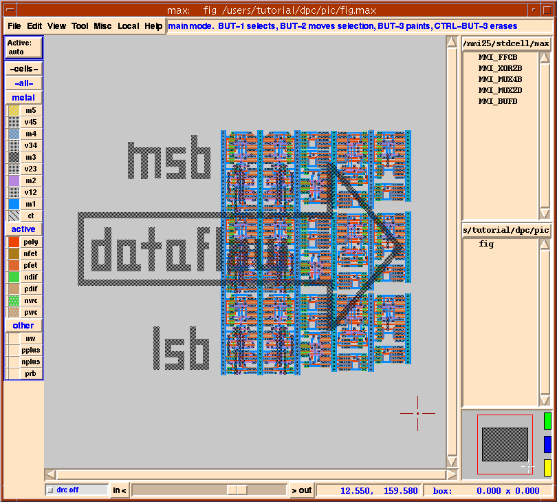
- Don't try to build data pathdata paths with data flowing from the top of the page to the bottom, or with the LSB on the top. If you do, DPC will not give you the desired results.
- Most cell libraries are oriented so that the top of the cell has a horizontal power supply (for example, VDD) and the bottom has a horizontal ground supply (for example, GND or VSS). In this orientation, the cell heights are fixed but the cell widths vary depending on the function and power level of the cell. In the SUE DPC flow, cells are ROTATED 90 degrees. Therefore, schematics oriented by columns in SUE will end up as rows in the DEF file. When placing a data path into your chip, you can then rotate or flip the data path depending on the needs of the floorplan.
- DPC automatically flips rows so that the power and ground supplies overlap between rows. The orientation of individual cells or blocks is notated with a slash in the DPC placement view, which you can verify with Ctrl-a or
Toggle Placement Viewin theSimmenu.
- In DPC, all sizes are normalized to grids, one grid being the wiring pitch or track. Thus all cell sizes, widths and lengths, will be integers as will bit pitches. Grids do not need to be square either. When DPC writes out parasitic and placement files, it will convert these grids back into real numbers.
The Basic Placement Algorithm
A firm grasp of this section's concepts is essential to getting the most from DPC.
- The first stage of DPC placement consists of breaking the entire design into columns. All icons whose boundaries overlap with other icons in the same column (even a little), excluding text, are placed in the same column. It is wise to leave a definite space between columns so that there is no confusion. All text (including the text in the icons), wires, arcs, lines, or icons that don't affect placement (like I/O's or title bars) are ignored during this step.
- Let's look at an example.
- Your schematic should look like Figure 14-a.
Figure 14: Simple DPC Placement Example: a) Schematic; b) Placement
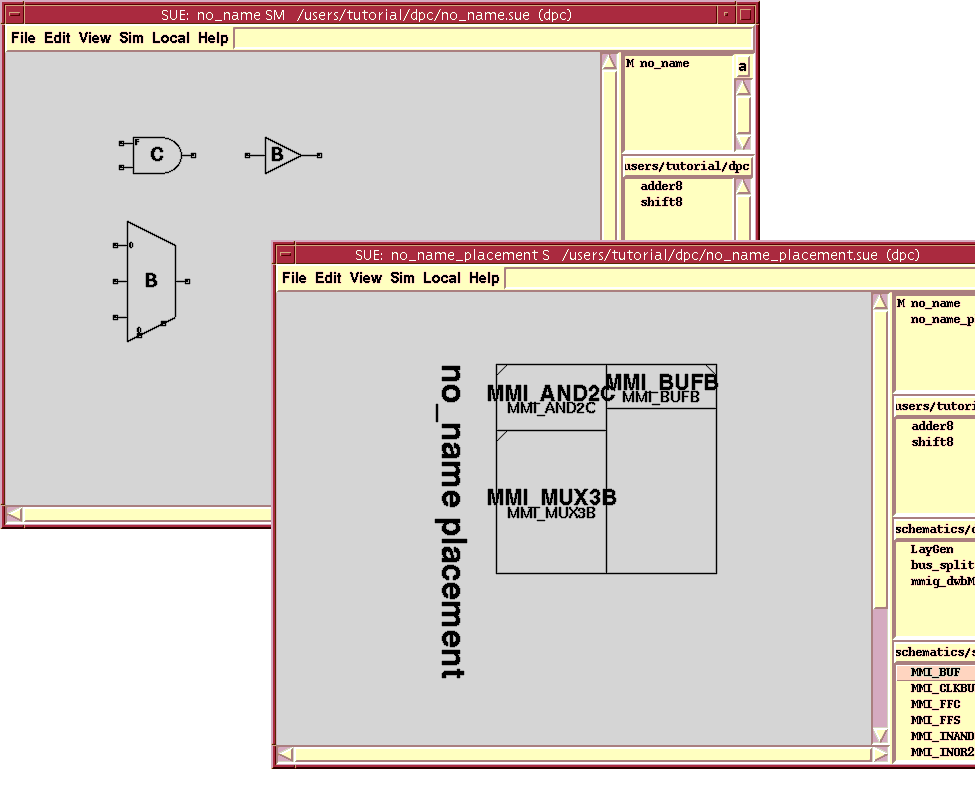
- Now we are going to run DPC netlist. DPC netlist will create the placement file, Verilog netlist, and parasitic file for our schematic. We will then look at the placement. Note: in this case, the netlist and parasitic files are useless since we haven't added any wires.
- Type Ctrl-a or
Toggle Placement Viewin theSimmenu to see the placement. Your placement should look like Figure 14-b.
- Notice that the placement is two columns, just like the schematic, and that the cells are placed from the top (or MSB) downward. Also verify that the columns are alternatively flipped -- look at the hash marks on the instances that signify orientation - so that the power/ground rails overlap correctly.
- Now we are going to change the schematic, rerun the DPC netlist, and look at the results. This is the first iteration loop in DPC.
- Move the
MMI_BUFBgate to the left so it overlaps the right edge of the other two icons as shown in Figure 15-a.Figure 15: Placement of Overlapping Cells: a) Schematic; b) Placement
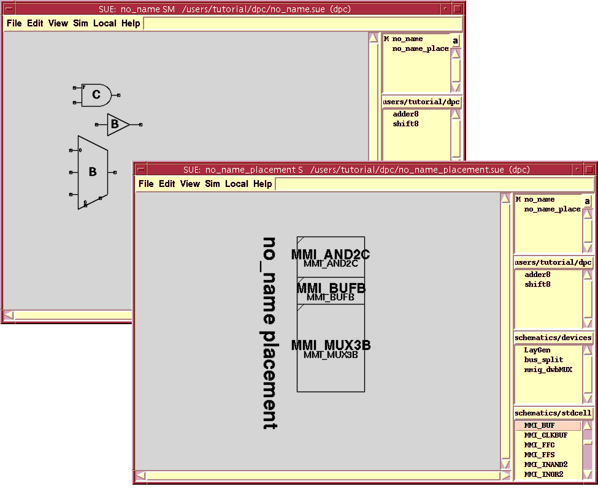
- Toggle
Show Placementwith Ctrl-a to see the resultant placement. Your placement view should now look like Figure 15 -b. What happened?
- Since
MMI_BUFBnow overlaps with theMMI_AND2Cicon, it is placed in the same column with it. Remember, it's a good idea to make sure cells CLEARLY DO NOT overlap if you want them to be placed in different columns.
- Notice also that
MMI_BUFBis located aboveMMI_MUX3Bin the placement. This is because the icons are first segregated into columns and then sorted in each column from top to bottom based on their icon origin (the little "+" in the icon view of the cell) which is usually near the center of the icon.
- Often, you don't want to have to make icons overlap to get them into the same column like we just did. It was easy here, but if you've already drawn something complicated, including the wires, it can be a mess to change it. Instead, all you need to do is add an icon that is wide enough to overlap both columns (or more) that you want to interleave. There is a special icon for this called a "
row_spanner" (think column spanner - it is a row in the layout because of the 90 degree rotation). This is a special empty generator whose width can be adjusted by shift-double-clicking on it so that it will span multiple columns.
- Let's try using this
row_spannerin a trivial case. If you want to see it used in a more realistic example, look at thealu8and theadder8schematics from above.
- Move the gates so that they are in a horizontal line without any overlaps as in Figure 16.
Figure 16: Horizontal Placement Of Non-Overlapping Cells
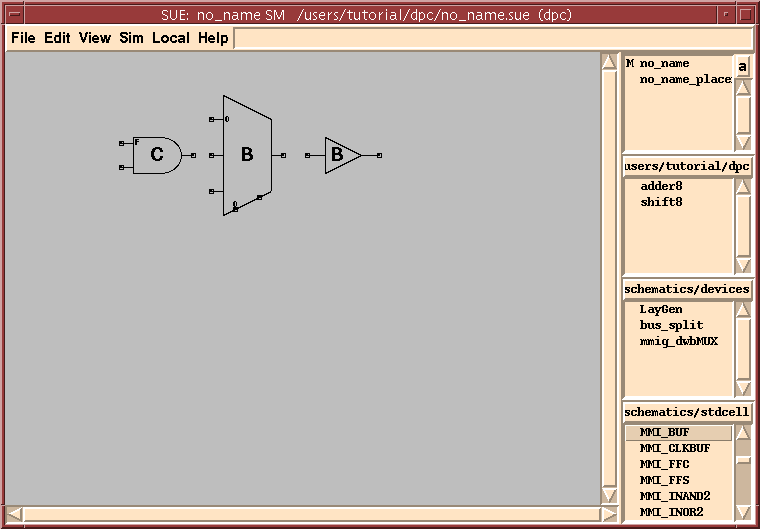
- Your schematic should now look like Figure 17-a.
Figure 17: DPC Row Spanner: a) Schematic; b) Placement
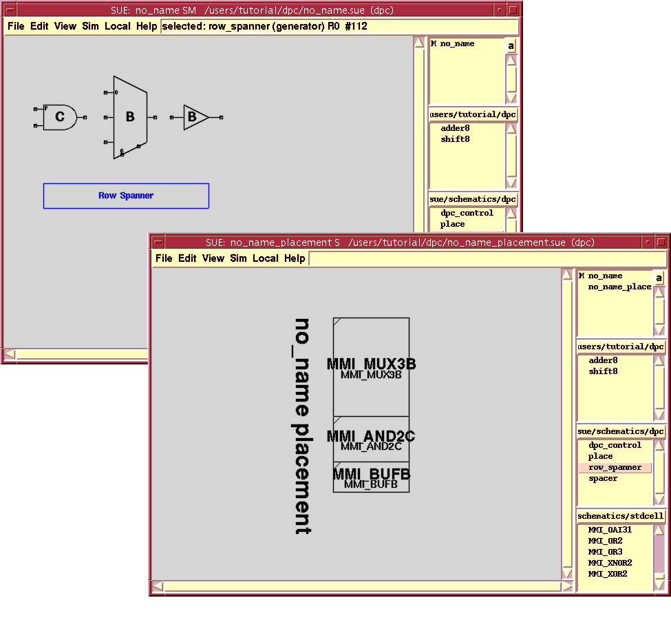
- Now run
DPC Netlistwith Shift-n andToggle Placement Viewwith Ctrl-a to see the resultant placement. It should look like Figure 17-b. If not, try again.
- So far we have only dealt with schematics that had no bused icons, DPC properties (see below) or other bit specifiers. This mode is useful for packing small bits of control logic either by themselves, or in and around data paths. Now on to data paths.
Bit Slice Design
- In most data paths, cells are placed in bit slices and do not overlap into adjacent bit slices. The data flows horizontally, confined to a single bit slice which keeps wires short and makes circuits fast. A notable exception is in logical or arithmetic functions which contain trees or other combining functions, like carry look-ahead adders. In these cases, cells must be placed in a more free-form arrangement, often crossing bit slices. In addition, the minimal control logic and buffering that drives rows of flipflops, muxes, etc. is often bit-slice independent.
- Bused icons (icons with
[msb:lsb]or just[num]in their name) are expanded into the appropriate number of individual icons and automatically placed into the bit slice associated with their bit number. For example, an icon with the name[3:2]will be expanded into two icons,[3]and[2], and placed in bit slices 3 and 2, while an icon with the name[2]is only one icon but will be placed in bit slice 2. Thus, the icon's name serves two purposes:
- Note that the bit slice position can be overridden with the "
dpc property" (see below).
- If any icon in a column has a bit specifier, then the bit slices of that column will be aligned to the same bit slices of all other columns. Therefore, icons with name
[1]will be aligned with all icons in all columns with the name[1]on that schematic. Consider the example in Figure 18.
Figure 18: Simple Bit Slice Example
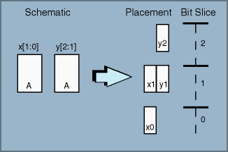
- If you place multiple bused icons in the column with overlapping bit slices, then the icons will be interleaved. Furthermore, within the bit slice, the icons will be packed in the same vertical order as on the schematic as demonstrated in the example in Figure 19.
Figure 19: Interleaved Bit Slice Example
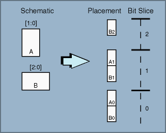
- What happens when you interleave too many cells so that they cannot fit into the bit slice? DPC has two ways of dealing with this situation:
- Case 1 is considered the "
normal" mode and case 2 is called "bit_slice". These modes are determined globally by the variableDPC(MODE)and they can also be adjusted on a schematic by schematic basis by adding thedpc_controlicon in thedpc Libraryand specifying the "mode". Figure 20 is an example that shows the different placements that result from the different modes:
Figure 20: Overflowing Bit Slice Example

- Do this now: use the three gates in your test schematic in place of A, B, and C in the examples above and recreate the last three examples.
Mixed Bit Slice Design
- What happens when you mix bused icons with non-bused icons in the same column? This happens all the time. All icons without a bit specification will be placed in the "current" bit location. Remember that the icons are being placed on a column by column basis starting from the icon whose origin is closest to the top in the schematic and working down. The "current" bit location is either the bit slice where the last icon was placed in the column or, if none, then the highest bit slice in the entire schematic (the top of the placement).
- To override this rule, simply add a bit slice identifier to the icon with the desired bit location, such as
[3]. This can be either placed in thenamefield in theEdit Propertiespopup for the icon, or in thedpcfield for people who don't like to clutter up the name. Note: a bit specifier in thedpcfield overrides the name field; and for specifying more than one bit, see the next section, Getting Tricky, for the exact syntax.
- Look at the example in Figure 21. Do you see where icon "
C" and "E" got placed? Can you see why?
Figure 21: Mixed Bit Slice Example
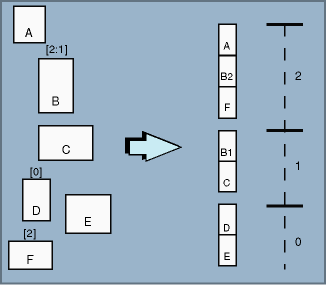
- Now use your
testschematic and experiment with this example by adding more icons, runningDPC Netlist, and looking at the placement.
Summary
- Let's summarize the placement algorithm so far:
- Make sure you understand this before proceeding to the next section.
Getting Tricky
- Not all data paths can be built with the simple rules just discussed, though most can. If you don't have much time, skip this section.
- Sometimes a bus with more bits than the rest of the data path is needed; for example, from the output of a multiplier. To get this bus into the width of the rest of the data path, you want to double up the bit slices. The
dpc propertyon standard cell icons is set up for just that and other non-standard cases. To specify the algorithmic bit slice positioning of a bus (as opposed to just bit number goes to bit position), add the following syntax to thedpcfield on a bused icon:
p[max:min]=f($b) or p[bit]=f($b) or simpler p=f($b) or simpler f($b)
- The variable "
$b" will be substituted for the actual bit number. Examples of each type of syntax are shown below.
- For example, to fit a 64-bit bus (
[63:0]) into bit slices 31 to 0, use the following expression:
$b/2
- To flip the order of an icon with the size
[15:0], use:
15-$b
- To place all three inverters of
[2:0]at bit slice position 5, use:
p=5
- Let's experiment with these three cases:
- Load the cell "
example1.sue" provided in the tutorial. You should see the schematic shown in Figure 22 -a.
DPC Netlistwith Shift-n and toggle placement view with Ctrl-a to see the placement as in Figure 22 -b.Figure 22: Tricky Placement Example: a) Schematic; b) Placement
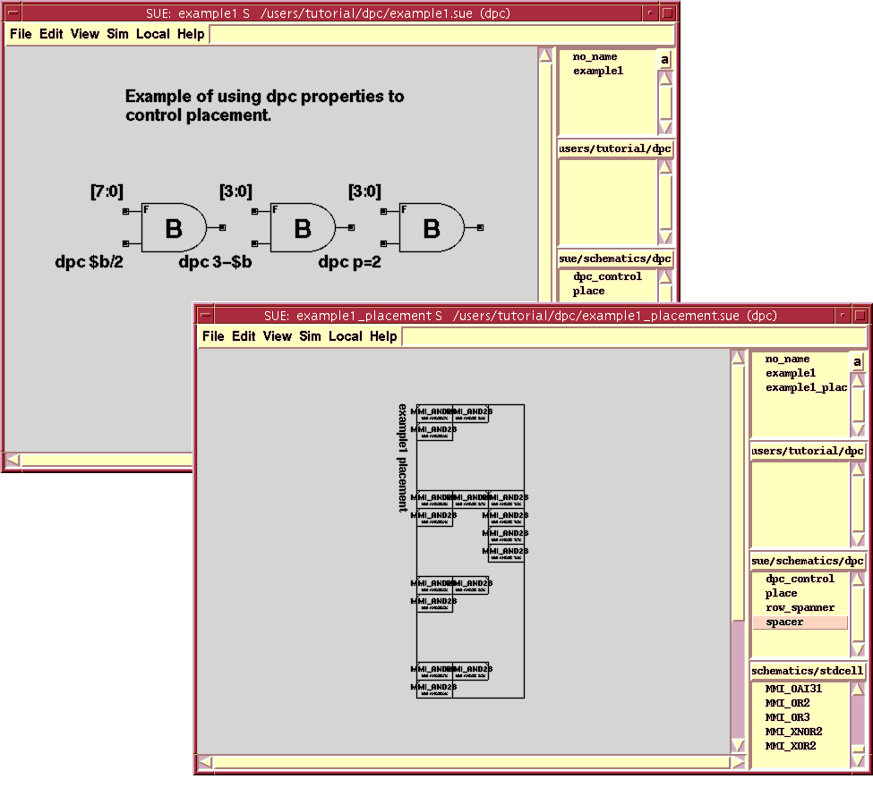
- What happened? The leftmost
MMI_AND2Bgate has adpc propertyof "$b/2", which puts bit[7]in the 3rd bit slice (7/2 = 3 - integer arithmetic), bit[6]in the 3rd bit slice too (6/2 = 3), bit[5]in the 2nd bit slice (5/2 = 2), etc. Hence, the cells are doubled up in a bit slice.
- The center
MMI_AND2Bgate has adpc propertyof "3-$b", which puts bit[3]into the 0th bit slice (3 - 3 = 0), bit[2]into the 1st bit slice (3 - 1 = 2), and so on. Hence, the bit order is reversed. To see this, zoom in closely on the topMMI_AND2Bin the middle column and you will see that its name is "MMI_AND2B_2$0$" which means it is the LSB. You could also just select it and look in theSUE Info Bar, which displays information about the selected object.
- Finally, the rightmost
MMI_AND2Bgate has adpc propertyof "p=2" which means that every bit is placed in bit slice 2.
- Notice also that in the schematic view, the text of the icons overlaps yet the icons are still segregated into different columns. This is because the text is ignored.
- If you want to specify some bits with a different algorithm than others, you can do that also, for example:
p[7:4]=2 p[3:0]=0
- which will put the top half of the icons in the second bit position and the bottom half into the bottommost bit position. You could have specified the bits completely, also:
p[7]=2 p[6]=2 p[5]=2 p[4]=2 p[3]=0 p[2]=0 p[1]=0 p[0]=0
- Of course, if you don't specify any bits or ranges of bits, they will just get their normal default bit locations.
- You can also specify what rows to place the icons of a bused icon in, using the following syntax:
r[max:min]=f($b) or r[bit]=f($b) or simpler r=f($b)
- Thus, if you want to stack a bus in half the height but in two rows, you might use the syntax:
p=$b/2 r=$b%2
- where the "%" is the mod operator in TCL (sometimes called the remainder operator).
- "
example2" demonstrates these two cases:
- Load the cell
example2.sueprovided in the tutorial. You should see the schematic shown in Figure 23-a.Figure 23: "Example2.sue": a) Schematic; b) Placement
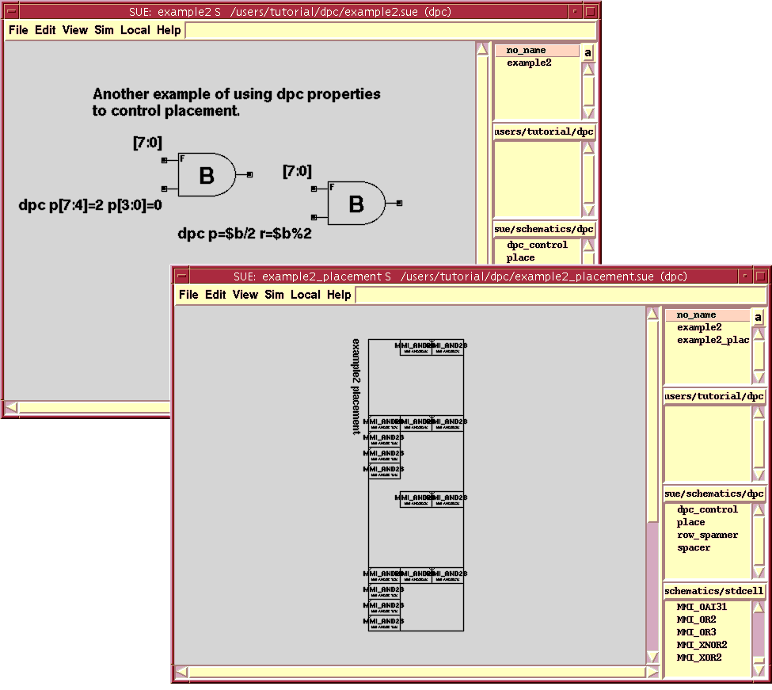
DPC Netlistwith Shift-n and toggle placement view with Ctrl-a to see the placement as in Figure 23-b.
- Notice that the first
MMI_AND2Bgate has four of its instances in bit position number 2, and the other half in bit position number 0. Moving over to the next gate notice that there are 8 gates, placed in adjacent columns (vertical rows) in the lower 4 bit slices. In this example, no cells are placed in the upper 4 bit slices.
- Consider this example. If you want to array an icon laterally instead of vertically, use this:
p=0 r=$b
- Note that the row syntax is more restrictive than the pitch syntax: you can't specify negative rows and you can't skip rows. This example is left for you to do on your own.
Setting the Data Path Bit Pitch
- The pitch or height of each bit position is predetermined by the designer, based on the technology and cell library. This pitch is specified in the
.suercfile in terms of grids or routing tracks by the variableDPC(PITCH). Usually the pitch should be the same for everyone working on the same project or at least the same for each specific data pathdata path in the chip The bit pitch for a single schematic can, however, be overridden by adding thedpc_controlicon and specifying the "pitch".
Adding Spaces
- Sometimes, it is necessary to space cells or columns apart from each other in ways different than the simple bit-slice methodology. SUE provides this capability with "
spacer" cells and with the "dpc property". A spacer might be needed to accommodate the routing congestion inherent in a large barrel shifter, for example.
- The
spacercell, which is in thedpc Icon List Boxand is a special cell, allows you to add arbitrary horizontal and/or vertical space to a design. Think of this icon as a cell whose size can be adjusted on the schematic, but is otherwise empty. If you wanted to add some space between two rows of your design, place the spacer icon in the desired spot and set itsrowsline to, for example, "1r" or "1row". This will add one entire row of space (or one column in the placement view), which might be needed to improve the routability of a particularly congested area. If SUE doesn't see an "r" in the string, it will default to grids, which allows for finer control.
- Let's go back momentarily to the
alu8example to add space to the shifter there.
- Run
DPC Netlist(Shift-n) andToggle Show Placement(Ctrl-a). You should see the space between the two columns, as shown in Figure 24.Figure 24: Spacer Inserted Between Columns In "alu8"
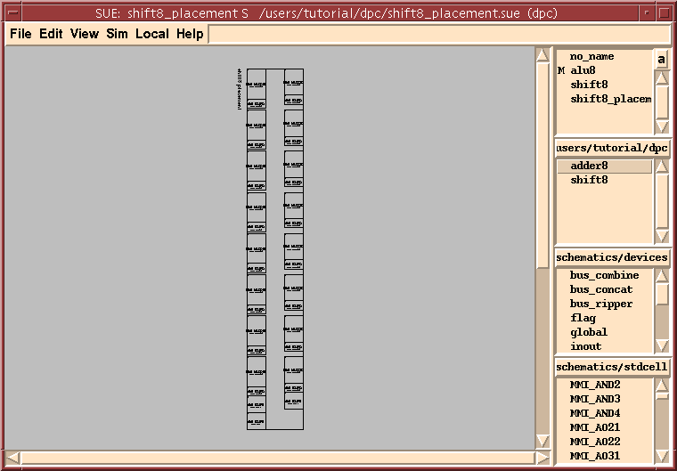
- Why did we choose this place to put a spacer? In a barrel shifter, the inputs can be shifted by any amount, and thus we need a routing track across the data path equal to the shifter width. For an 8-bit shifter, we can easily route 8 wires over the cells, which in this example are 10 grids tall. For a 32-bit shifter or larger, we need to add space for the 32 wires, even using multiple layers of metal.
- Spacer cells can also be added in between icons in a given column to provide extra space between icons. Simply change the
colvalue to the desired number of grids of space. If DPC sees a "p" in the value, as in "2p" or "2 pitches", DPC will add that many pitches of space.
- Another way to adjust the position of a cell in a column is by adding an offset in the
dpcpropertyof the icon. Offsets are of the form:
+<number> OR -<number>
- Let's look at an example.
- Load the cell
example3.sueinto SUE. You should see the schematic shown in Figure 25-a.Figure 25: Spacer Example: b) Schematic; b) Placement
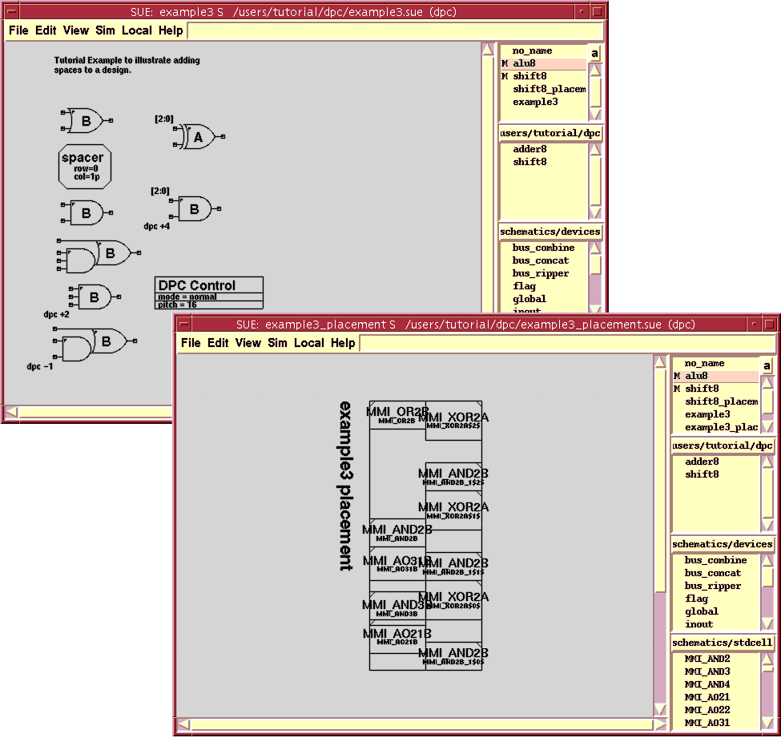
- Run
DPC Netlist(Shift-n) andToggle Show Placement(Ctrl-a). You should see a placement like Figure 25 -b.
- Before we describe what happened, let's turn on the grid to make it easier to see:
- Let's look at the leftmost column first. The big space between the top two icons is due to the
spacercell. Use Ctrl-a to swap back and forth between the placement and schematic to follow this. You should also see the 2-grid space betweenMMI_AO31BandMMI_AND3Bwhich came from the "+2" in thedpc propertyonMMI_AND3B. Finally, notice that the bottom two icons actually overlap by one grid, which is due to the "-1"dpc propertyonMMI_AO21B.
- In the rightmost column, we have interleaved two 3-bit bused icons. Do you see the space in every bit pitch between
MMI_XOR2AandMMI_AND2B? This is from the "+4"dpc propertyonMMI_AND2B.
Hierarchical placement
- The Data Path Compiler is fully hierarchical. If you place down an instance of a 16-bit adder, for example, all of the sub cells of that adder will be placed starting from the given position. This is not quite the same as if you had one multiple-column cell that was the adder. In that case, columns of the cell wouldn't be flipped automatically and thus you couldn't stack other cells above or below it (it would be a special cell with a different cell height).
- Working with hierarchical cells may seem confusing at first; however, they act just like very large standard cells. For example, if you place a hierarchical cell that has 3 columns of cells in it, and you want to place a cell under each of the columns, you can't simply do as shown in Figure 26.
Figure 26: Hierarchy Example 1

- Instead, you must create a new hierarchical cell which contains the three cells and then stack the two different hierarchical cells as shown in Figure 27.
Figure 27: Hierarchy Example 2

- If you're motivated, try recreating this example in DPC.
DPC Summary
- As you have seen, DPC can make designing fast data paths a breeze. This tutorial only covered part of what DPC is capable of. To learn more about DPC, especially how to set up DPC for your own technology, be sure to read the DPC User Guide.
| ----- Micro Magic ----- |